Noteer bij ieder component, kabel of aansluiting de juiste naam.
Een maat als 3″ of 2,5″ lees je als drie duim en twee en een halve duim. In het Engels heet die eenheid een inch, en een duim is 2,54 cm. Bij een harde schijf of een moederbord is het geen echte afmeting maar de naam van een vormfactor: een schijf van 3,5″ is niet drie en een halve duim breed, hij past in de plaats die voor dat formaat voorzien is.
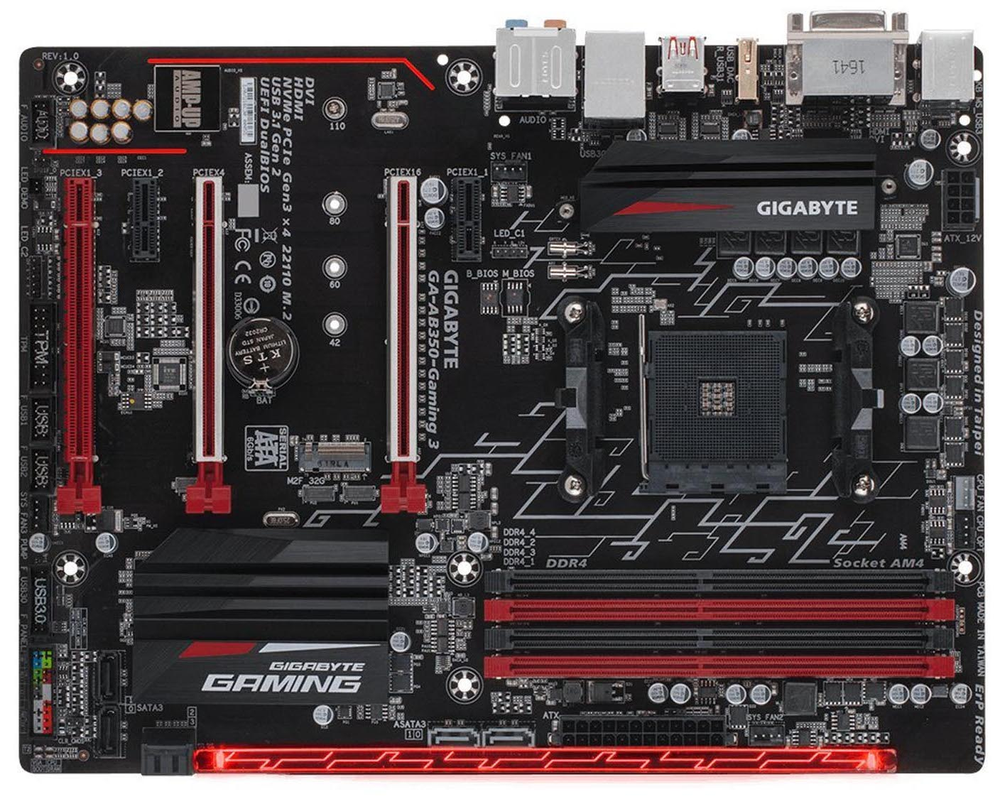
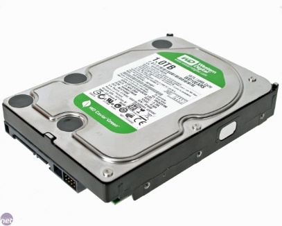
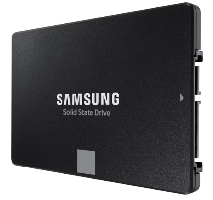
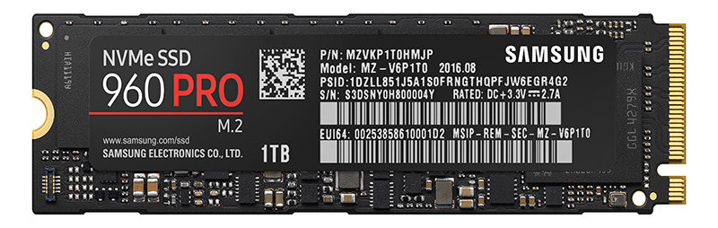
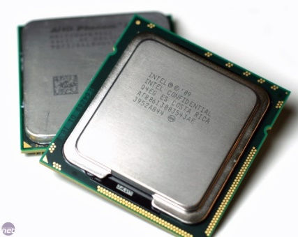
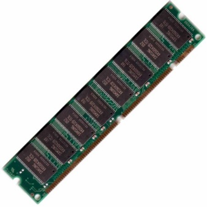
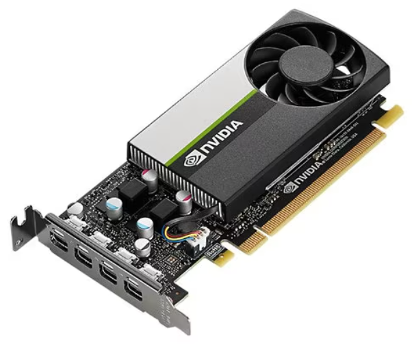
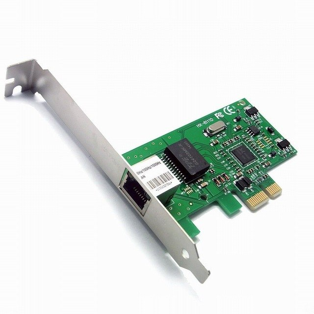
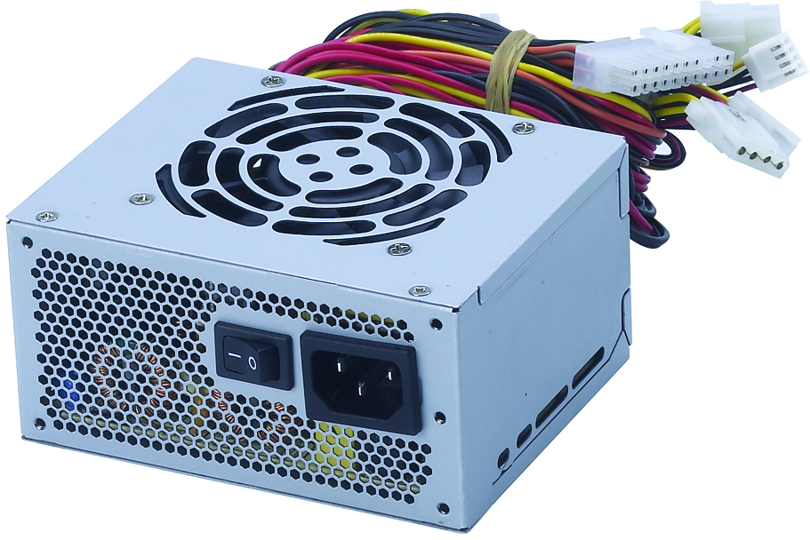
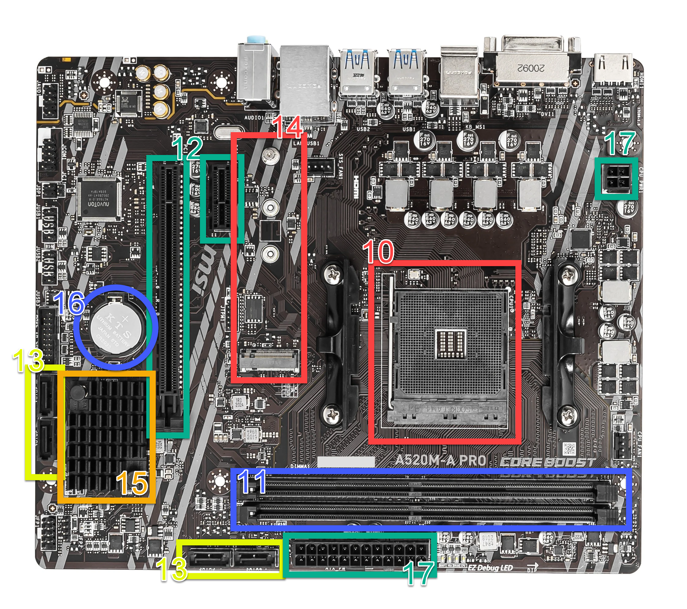
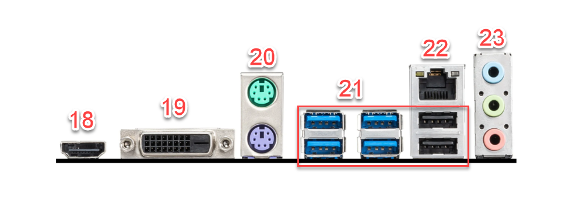
| Groen: | |
| Paars: |
| Blauw: | |
| Zwart: |
| Blauw: | |
| Groen: | |
| Rood: |
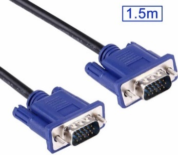
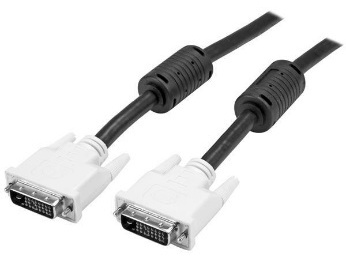
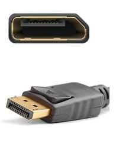
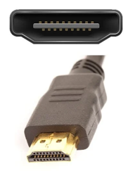
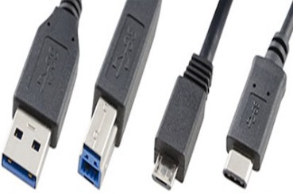
| 1 | |
| 2 | |
| 3 | |
| 4 |
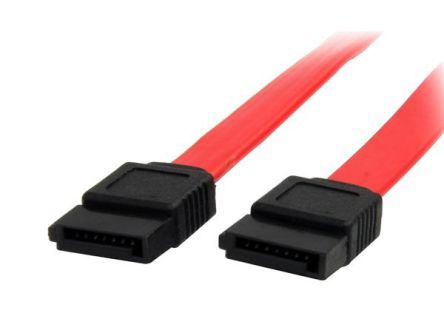
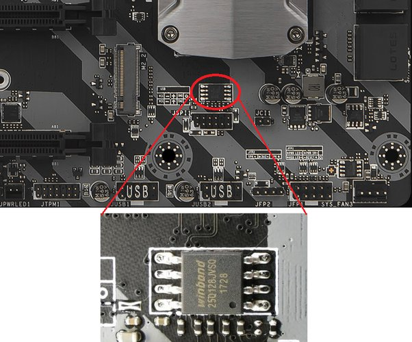